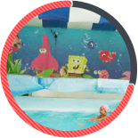
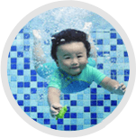
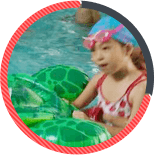

结合婴幼儿不同时期生理、智力发育特点，提高宝宝的专注力、反应能力以及社会行为能力等，制订八等级早教课程，并配合专业抚触按摩，尽早让宝宝摆脱颈圈游泳，使宝宝的颈椎保持在健康、无压力的状态下活动。

对于家长来说，可体会如何在水中与宝宝玩耍，通过充满关爱的积极方式，增强宝宝自信心、信任度和沟通反应能力，能够加深孩子对亲情的理解，与孩子更加亲近。

增强体质，提高协调性，促进孩子健康成长，选拔参加省市、国家级赛事，为升学、考试做特长项目加分。

针对于身体素质好，具有一定游泳天赋、训练基础的适龄儿童进行系统训练，逐步培养为专业运动员，为输送到省市队、八一队、国家队打下坚实基础，实现冠军梦。